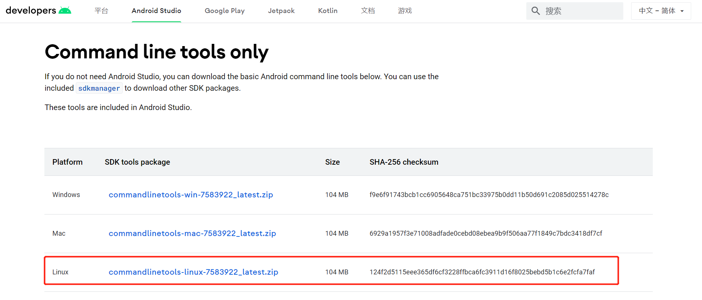

安裝Android Sdk
sdk安裝方式
常規思路，下載sdk，安裝之後修改環境。但是發現，網路上已經沒有了sdk的下載資源，有的也只是很老的版本。查看Android開發文件——sdkmanager的使用指南，發現可以使用sdkmanager這個命令列工具進行下載。
下載sdkmanager工具包
官網下載頁最底部-命令列工具下載，找到Linux平臺的工具包

使用wget下載到伺服器
wget -P /home/android-sdk/ https://dl.google.com/android/repository/commandlinetools-linux-7583922_latest.zip
解壓工具包
unzip commandlinetools-linux-7583922_latest.zip
sdkmanager在/home/android-sdk/cmdline-tools/bin下。
選擇下載最新的sdk版本
使用命令查看最新的stable版本
[root@192 bin]# ./sdkmanager --list --channel=0
Error: Could not determine SDK root.
Error: Either specify it explicitly with --sdk_root= or move this package into its expected location: <sdk>/cmdline-tools/latest/
報錯了，無法找到sdk根目錄，提示說有兩種解決辦法：一是用–sdk_root指定路徑，二是把資料夾移動到指定路徑。
因為懶，選擇試一下第二個一勞永逸的方法。
[root@192 cmdline-tools]# mkdir latest
[root@192 cmdline-tools]# mv bin/ lib/ NOTICE.txt source.properties -t latest/
再次執行查詢命令，就會查出一長條的版本。
[root@192 cmdline-tools]# cd latest/bin/
[root@192 bin]# ./sdkmanager --list --channel=0
安裝sdk
因為App項目使用了Android-30的版本，故安裝對應的platforms;android-30
./sdkmanager "build-tools;30.0.3" "platforms;android-30"
./sdkmanager "platform-tools" "build-tools;31.0.0" "build-tools;32.0.0" "platforms;android-31" "platforms;android-32"
在彈出協議許可時選擇y，就開始安裝了。
下載完成後，就可以在cmdline-tools的同級目錄，找到下載的sdk了。這也是為什麼上面要指定sdk-root的原因了。
[root@192 android-sdk]# ls
build-tools cmdline-tools commandlinetools-linux-7583922_latest.zip emulator licenses patcher platforms platform-tools tools
組態ANDROID_HOME環境變數
[root@192 android-sdk]# export ANDROID_HOME=/home/android-sdk
[root@192 android-sdk]# export PATH=$ANDROID_HOME/platform-tools:$ANDROID_HOME/tools:$ANDROID_HOME/tools/bin:$PATH
[root@192 android-sdk]# source /etc/profile
至此，Linux安裝Android Sdk完成！